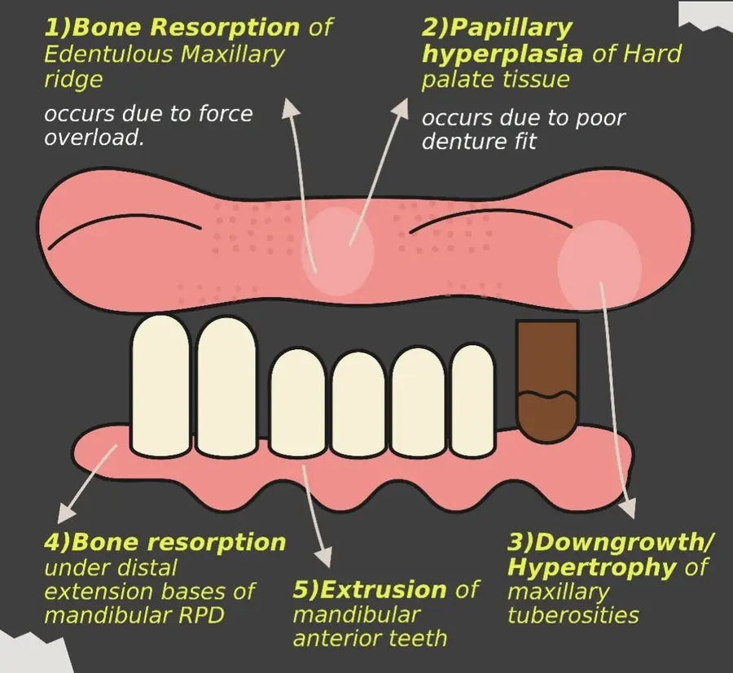

نسخه استخراجشده؛ ترجمه یا تأیید علمی انجام نشده است. وضعیت: captured
بیماری آمده که ماگزیلایش کاملاً بیدندان است و مقابلش فقط دندانهای قدامی مندیبل مانده. در دوران دانشجویی شنیدهای که او در معرض کامبینیشن سندروم است و درمان پیشگیرانهی سنگین میخواهد. این تابلو واقعاً در بالین پیدا میشود؟
کامبینیشن سندروم (combination syndrome) پنج جزء داشت که قرار بود با هم بیایند:

بعدها شش علامت دیگر هم به فهرست اضافه شد که بهجز تغییرات پریودنتال، احتمالاً نشانههای پروتز کهنه و مراقبت ناکافی بودند.
در ۲۰۱۹ یک مطالعه ۹۹ بیمار با دنچر کامل ماگزیلا مقابل فقط دندانهای قدامی مندیبل را بررسی کرد؛ همه توسط یک معاینهکنندهی واحد. بیماران از بیمارستان ارجاعی آمده بودند، یعنی موارد دشوار و درمانهای ناموفق قبلی؛ اگر قرار بود جایی سندروم پیدا شود، اینجا بود. پیدا نشد.
۳۸ بیمار از ۹۹ نفر تحلیل شدید سکستانت قدامی ماگزیلا داشتند و در تمام موارد این تحلیل با جایگزینی فیبروزی همراه بود؛ یعنی همان فلبی ریج که زیر فشار قالبگیری و زیر بیس دنچر حرکت میکند و ساپورت نمیدهد.
پاپیلاری هایپرپلازی محصول بایوفیلم دنچر است، نه تروما از اکلوژن. کاهش ورتیکال دایمنشن (VD)، اپولیس فیشوراتوم و تطابق ضعیف پروتز هم احتمالاً نشانهی پروتز رهاشدهاند، نه جزئی از یک سندروم. این یافتهها کنار هم دیده میشدند چون در بیمار با پروتز قدیمی همهشان محتملاند، نه چون ریشهی مشترکی دارند.
شواهد این مطالعه پیشنهاد میکند تابلوی پنججزئی در واقعیت بالینی یا نادر است یا اصلاً وجود ندارد. اما مشکل قدام ماگزیلا در نزدیک به ۴۰ درصد این بیماران واقعی است؛ انرژی را صرف همان کن، نه درمانهای پیشگیرانهی سنگینی که تجویزشان بدون شواهد قطعی محل تردید است.
نوع سؤال: ساخت کلمه · 9 خانه
حروف منبع: د · ت · پ · و · ت · ر · ی · ی · ن